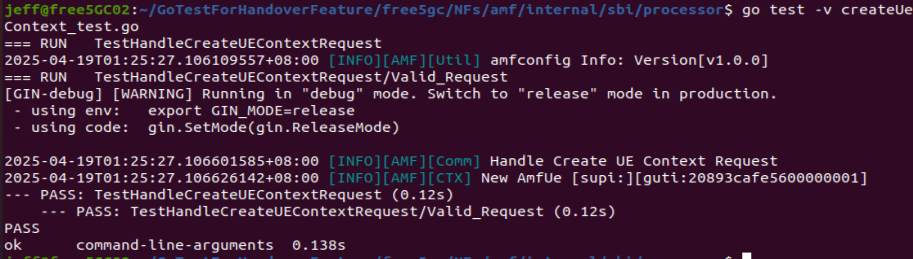

Unit test in free5GC's Network Function
In the Go programming language, testing is an essential part of writing reliable and maintainable software. Go provides a built-in tool called go test that makes it easy to write and run automated tests. This tool helps developers ensure that their code behaves as expected, catch bugs early, and make future changes with confidence.
I. How to write a Go test program
Here's a quick breakdown:
- Test files: Named with
_test.gosuffix (e.g.,math_test.go) - Test functions: Start with
Testand take a*testing.Tas a parameter (e.g.,func TestAdd(t *testing.T)) - Command: Execute
go test. (e.g.,go test math_test.go)
Example
math.go
package math
func Add(a, b int) int {
return a + b
}
math_test.go
package math
import "testing"
func TestAdd(t *testing.T) {
result := Add(2, 3)
if result != 5 {
t.Errorf("Expected 5, but got %d", result)
}
}
Then you'd run:
go test
And you'll see output like:
PASS
ok your/module/path 0.001s
Flags you might use:
go test -v: Verbose outputgo test ./...: Test all packages recursivelygo test -cover: Show code coveragego test -run=TestAdd: Run only a specific testgo test -count=1: Run the test again without test-cache, in order to run the test without getting the old result cache.go test -race: Run the test with a built-in Data Race Detector.go test -p <n>: Specify the number<n>of programs that can be run in parallel.
II. Test Example in AMF: Create UE Context
- Purpose: Verify that the AMF’s SBI‐processor correctly handles a UE Context creation request that includes a binary NGAP “Handover Required” message.
- Key Techniques:
- Dependency injection of config and context (
initAMFConfig). - Mocking the AMF app interface with GoMock to intercept service calls.
- Using Gin’s testing utilities (
httptest.NewRecorder(),gin.CreateTestContext) to simulate HTTP requests. - Testify for concise assertions.
Here’s a breakdown of what’s happening in createUeContext_test.go:
1. Test Setup and Configuration
var testConfig = factory.Config{ … }
func initAMFConfig() {
factory.AmfConfig = &testConfig
amfContext := amf_context.GetSelf()
amf_context.InitAmfContext(amfContext)
}
testConfigdefines an in‑memory AMF configuration (copied fromamfcfg.yaml) with PLMN IDs, supported slices, timers, NGAP/SBI endpoints, etc.initAMFConfig()injects this config into the globalfactory.AmfConfigand initializes the AMF context so that all subsequent calls see a fully‑formed AMF state.
2. Constructing the CreateUeContextRequest
CreateUeContextRequest := models.CreateUeContextRequest{
JsonData: &models.UeContextCreateData{ … },
BinaryDataN2Information: buildHandoverRequiredNGAPBinaryData(),
}
JsonDataholds the UE’s SUPI, security capabilities, target RAN node ID, TAI, and a placeholder pointing to the binary N2 info (Content‑Id: N2SmInfo).BinaryDataN2Informationcarries the actual NGAP handover‐required message as bytes, generated bybuildHandoverRequiredTransfer(),buildSourceToTargetTransparentTransfer(targetGNBID, targetCellID), andbuildHandoverRequiredNGAPBinaryData().
3. The Core Test: TestHandleCreateUEContextRequest
func TestHandleCreateUEContextRequest(t *testing.T) {
openapi.InterceptH2CClient()
defer openapi.RestoreH2CClient()
initAMFConfig()
openapi.InterceptH2CClient()swaps in a testing HTTP client so that when the processor makes SBI (Service-Based Interface) calls, they go through the mock rather than real network.- We call
initAMFConfig()to ensure AMF context is ready.
3a. Test Cases
testCases := []struct {
testDescription string
resultDescription string
request models.CreateUeContextRequest
responseBody any
expectedHTTPResp *httpwrapper.Response
}{
{
testDescription: "Valid Request",
resultDescription: "",
request: CreateUeContextRequest,
responseBody: &models.CreateUeContextResponse201{},
expectedHTTPResp: &httpwrapper.Response{
Status: http.StatusCreated,
Body: models.CreateUeContextResponse201{ … },
},
},
}
- Only one case: a valid request should produce HTTP 201 Created and return a minimal
CreateUeContextResponse201with the same SUPI and PDU session list. - Note that the response body is established to receive the response generated by the tested function.
3b. Mocking the AMF Application Interface
mockAMF := service.NewMockAmfAppInterface(gomock.NewController(t))
consumer, _ := consumer.NewConsumer(mockAMF)
processor, _ := processor.NewProcessor(mockAMF)
service.AMF = mockAMF
mockAMF.EXPECT().Context().Return(amf_context.GetSelf()).AnyTimes()
mockAMF.EXPECT().Consumer().Return(consumer).AnyTimes()
- A GoMock‐generated
mockAMFstands in for the real AMF app, so we can intercept calls duringHandleCreateUEContextRequest. - We tell it to always return our initialized context and consumer whenever
.Context()or.Consumer()is called
3c. Invoking the Processor and Verifying the Response
processor.HandleCreateUEContextRequest(c, tc.request)
httpResp := httpRecorder.Result()
rawBytes, _ := io.ReadAll(httpResp.Body)
openapi.Deserialize(tc.responseBody, rawBytes, …)
require.Equal(t, tc.expectedHTTPResp.Status, httpResp.StatusCode)
require.Equal(t, expectedBytes, respBytes)
- A Gin test context (
c) captures the HTTP request and response. - We call
HandleCreateUEContextRequest, then read back the HTTP status and body, deserialize into the expected model, and assert equality using Testify’srequire.Equal.
4. Result

Overall, the test examines that JSON + binary N2SM input to HandleCreateUEContextRequest yields the correct HTTP response under controlled, in‑memory conditions.
For more details, please visit test file under AMF with this path: amf/internal/sbi/processor/createUeContext_test.go.
III. Conclusion
Testing helps keep free5GC reliable and easy to maintain. Using Go’s built-in tools along with GoMock, Gin, and Testify, developers can check if important parts, like UE context creation, work correctly. The example shows how to test with both JSON and binary data in a safe, in-memory setup. This makes it easier to find bugs, improve code quality, and build better software. With good testing, free5GC becomes a stronger and more ready-to-use 5G core system.
IV. Reference
- Go 怎麼寫測試案例
- HTTP headers
- Golang: Unit tests with test gin context
- 如何在Go 中處理JSON
- Data Race Detector - The Go Programming Language
- go command #Compile packages and dependencies
About
Hi, my name is Jeff Chen, I'm a newcommer of 5G core network. My current focus is on developing AMF. If you notice any errors in this article, please reach out via Github!